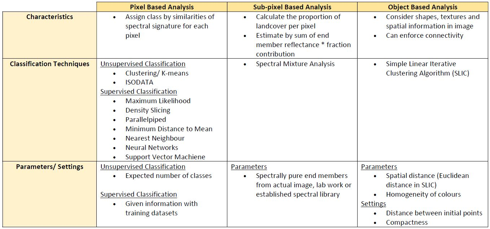
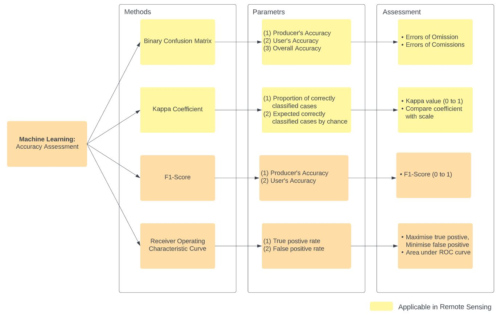

7 Week 7: Classification The Big Questions and Accuracy
7.1 Summary
Continuing the content in week 6, this week’s lecture further introduced object based image analysis and sub pixel analysis, then discussed the accuracy assessment in remote sensing classification. Object based image analysis is based on the identification of homogeneity and heterogeneity of cells for generating superpixel, while sub pixel analysis consider fraction that makeup an individual pixel to identify the proportion of landcover by spectral mixture analysis. Table below summarised the characteristics, techniques and required input of pixel based, sub-pixel-based and object based image analysis covered in week 6 & 7.

Similar to the pixel based analysis, several considerations should be accounted in sub-pixel based analysis to ensure the accuracy of outcome. A major issue is the faction image only provides percentage of land cover type without additional information for assessment, which can be analysed by: (1) Harden the classification to define the most abundant land cover (2) Use high resolution to compare with original sub-pixel analysis
In general, accuracy assessment in machine learning can be achieved through confusion matrix, kappa coefficient, F1-score and Receiver Operating Characteristic Curve.

Regarding the application in practice, some points are emphasised in class and should be aware of during selection of accuracy assessment method:
Binary Confusion Matrix
placement of decision boundary can change the accuracy
there is a trade-off between user’s accuracy and producer accuracy
Kappa Coefficient
there is no clear demarcation to define a good kappa value
kappa value can have different level of accuracy
F1-Score
calculation doesn’t consider true negative
assume that precision and recall are equally important
Good Practice in General
- adopt cross validation with random partition or spatial partition (k-fold/ leave-one-out/ spatial leave-one-out)
7.2 Application
7.2.1 Comparison between 3 types of classification
Under the provision of high resolution satellite image, there is an increasing popularity in applying object-based classification and numerous research compare how pixel-based and object-based perform in different research themes. Recent study by Saba et al. (2023) compared pixel, sub-pixel and object-based image analysis techniques for landslides detection in Lesser Himalaya. Authors applied pixel-based maximum likelihood classifier, sub-pixel analysis with sine cardinal and object-based analysis with image segmentation on high resolution satellite images obtained by different sensor, while accuracy was examined by binary confusion matrix, kappa coefficient and F-score. Result from this study presented that object-based image classification retrieved the best result with highest accuracy in landslide detection, followed by sub-pixel analysis, and lastly pixel-based approach.
In terms of study design, authors demonstrated how accuracy evaluation can be implemented in practice. The study explains how to structure a comprehensive research by considering the advantages and limitations of assessment indices. For example, to achieve a balanced evaluation and consider, authors also used F-score to evaluate the effectiveness of classification. In addition, this study emphasised on the strength and limitation of each classification method based on the result and literature review:
Pixel Based
Limitation:
dependent on spectral signature
lower detection accuracy due to spectral overlaying effects
false identification of speckled noisy result as clusters
not desirable for low and medium resolution data due to size of landslide
Sub-pixel Based
Strength:
- effective detection from spectral information and masks
Limitation:
dependent on spectral signature
false identification of speckled noisy result as clusters
sub-pixel information is hard to retain in resampling, ortho-rectifiation and co-registration
Object Based
Strength:
- robust in detecting landslide
Limitation:
dependent on type, spatial resolution and temporal resolution
not desirable for low and medium resolution data
Findings from this study derive same observation with Mehmood et al. (2022), which object based image analysis has better performance than the other 2 types of classification on high resolution image. On the other hand, the summary above shows that although sub-pixel and object based analysis provides a better overall result and accuracy, they do have additional issues to consider during implementation. Using sub-pixel based and object based analysis requires more attention on the preservation of information or feature details, and have more difficulty in ensuring the reproducibility due to the diverse settings and parameter selection.
7.3 Reflection
From the introduction of image classification in these two weeks, I have a better understanding on the diverse classification techniques, precautions in application and accuracy assessment. After doing literature review on classification techniques, I realise the importance of identifying characteristics, advantage and limitation of each methods, and select approach based on the research topic and datasets. Study by Saba et al. (2023) provide a lot of insight on the three types of image classification. Sub-pixel and object based may have a wider application than pixel based considering the abundance of classes from spectral values under fuzzy classifier and the variety of parameters combined respectively, which can significantly contribute to in high resolution analysis. This will be an interesting topic to research on as the performance of each approach may differ between various Geosciences applications, as they each with its limitation in practice.